SOSS الرائع: التوصيف الجوي لـ WASP-96 b باستخدام أرصاد الإصدار المبكر من JWST
الملخص
يتيح JWST الذي بدأ العمل حديثًا إمكانية دراسة أجواء العوالم البعيدة بدقة لم تتحقق من قبل. وفي صيف 2022 كان WASP-96 b، وهو زحل حار يدور حول نجم من النوع G8، أحد أوائل الكواكب الخارجية التي رصدها JWST. وفي إطار برنامج أرصاد الإصدار المبكر، رُصد عبور واحد لـ WASP-96 b باستخدام NIRISS/SOSS لالتقاط طيف عبوره من 0.6–2.85 µm. في هذا العمل، نستخدم أربعة أطر للاسترجاع الطيفي للإبلاغ عن قياسات دقيقة ومتينة للتركيب الجوي لـ WASP-96 b. نقيّد نسب الخلط الحجمية اللوغاريتمية لعدة أنواع كيميائية في غلافه الجوي، بما في ذلك: H2O = ، وCO2 = ، وK = . وتجدر الإشارة إلى أن نتائجنا تقدم أول قيد على وفرة البوتاسيوم في غلاف WASP-96 b الجوي، واستنتاجات مهمة بشأن الأنواع الحاملة للكربون مثل CO2 وCO. وتُفسَّر بيانات NIRISS/SOSS عند الأطوال الموجية القصيرة لدينا على أفضل وجه بوجود ميل تشتت رايلي معزّز، رغم الاستنتاجات السابقة بوجود غلاف جوي صافٍ — مع أننا لا نجد دليلًا على طبقة سحابية رمادية. وأخيرًا، نستكشف دقة البيانات اللازمة لتفسير الأرصاد باستخدام NIRISS/SOSS تفسيرًا ملائمًا. نجد أن استنتاجاتنا متينة إزاء مخططات تجميع مختلفة. أي إن الخصائص الجوية العامة للكوكب متسقة من الدقة المنخفضة إلى الدقة الأصلية للأداة. ويبيّن تحليلنا المنهجي لهذه الأرصاد الفائقة قدرة NIRISS/SOSS على كشف وتقييد أنواع جزيئية وذرية متعددة في أجواء الكواكب العملاقة الحارة.
keywords:
الكواكب والأقمار: الأغلفة الجوية – الكواكب والأقمار: الكواكب الغازية – الكواكب والأقمار: أفراد: WASP-96 b1 المقدمة
بعد الإطلاق في ديسمبر 2021، ورحلة حذرة إلى L2، وفترة تشغيل تجريبي ناجحة، بدأ JWST أخيرًا عملياته العلمية المنتظرة طويلًا في 12 يوليو 2022. ويُحسب للتقدم الكبير الذي أحرزه مجال فلك الكواكب الخارجية خلال العقدين الماضيين أن بعض أوائل الأرصاد بهذا المرصد الثوري الجديد كانت لكواكب خارجية عابرة. يوسّع JWST كثيرًا نطاق الأطوال الموجية التي يمكن من خلالها سبر أجواء الكواكب الخارجية من الفضاء. فقد سبرت الأرصاد السابقة المتقدمة بتلسكوب هابل الفضائي (HST) الأطوال الموجية فوق البنفسجية والبصرية والقريبة من تحت الحمراء حتى 1.7 µm. ومكّن تلسكوب سبيتزر الفضائي قياسات فوتومترية في الغالب أعمق داخل تحت الحمراء، غير أن نطاقي المرور الأكثر زرقة عند 3.6 و4.5 µm وحدهما بقيا عاملين بعد نفاد المبرّد في 2009. وبالاقتران، تتيح الأدوات الأربع على متن JWST دراسة أجواء الكواكب الخارجية من 0.6–28 µm؛ مما يمكّن من توصيف أجوائها عند أطوال موجية لم تُرصد من قبل، ويوسّع فضاء الاكتشاف إلى مجالات غير مطروقة. ويتضح ذلك من النتائج الأولى لأرصاد علم الإصدار المبكر (ERS) للمشتري الحار WASP-39 b التي أسفرت عن أول كشوف على الإطلاق لـ CO2 وSO2 (The JWST Transiting Exoplanet Community Early Release Science Team et al., 2022; Alderson et al., 2022; Rustamkulov et al., 2022; Tsai et al., 2022).
صُمّم برنامج أرصاد الإصدار المبكر (ERO) لتزويد المجتمع الفلكي ببيانات متاحة علنًا، تمس كثيرًا من الأهداف العلمية الرئيسية لـ JWST، مباشرة بعد نهاية فترة التشغيل التجريبي (Pontoppidan et al., 2022). وبالنسبة إلى جزء الكواكب الخارجية من برنامج ERO، رُصدت عبورات لزحلين حارين، WASP-96 b (Hellier et al., 2014) وHAT-P-18 b (Hartman et al., 2011; Fu et al., 2022)، باستخدام نمط المطيافية عديمة الشق لجسم واحد (SOSS) (Albert et al. submitted) في أداة المصوّر القريب من تحت الأحمر والمطياف عديم الشق (NIRISS) (Doyon et al. submitted).
يركز هذا العمل على WASP-96 b، وهو كوكب خارجي منتفخ من نوع الزحل الحار كتلته 0.498 0.03 MJ، ونصف قطره 1.20.06 RJ، ودرجة حرارة اتزانه 1300 K. ويدور حول نجم من النوع G8 في كوكبة Phoenix بفترة مدارية مقدارها 3.4 d. إن الفترة المدارية القصيرة للكوكب، مقرونةً بكثافته المنخفضة، تجعله مرشحًا مثاليًا للمطيافية الجوية. وبالفعل، أُجريت دراسات جوية سابقة متعددة لهذا الكوكب، كانت أولها طيفًا أرضيًا باستخدام VLT/FORS2 بواسطة Nikolov et al. (2018). غطّى هذا الرصد مدى طيفيًا مقداره 0.36–0.82 µm باستخدام صناديق طيفية بعروض 0.016 µm. وأتاحت هذه الدقة الطيفية قياس خط الصوديوم D المتسع بالضغط، مع أجنحة أُفيد بأنها تغطي ستة ارتفاعات مقياسية للضغط الجوي (Nikolov et al., 2018). وأشارت قابلية رؤية أجنحة الصوديوم إلى عدم وجود سحب أو ضباب يحجبها في الغلاف الجوي ضمن مجالات الضغط المسبرة في العبور (Fortney, 2005). وقد دعم ذلك نمذجتهم الجوية التي لا تجد دليلًا على عتامة إضافية بسبب السحب. ويستنتج Nikolov et al. (2018) كذلك أن وفرة Na متسقة مع القيمة النجمية المقاسة.
قبل فترة تشغيل JWST التجريبي، نشر Nikolov et al. (2022) طيف عبور WASP-96 b باستخدام HST وSpitzer، مقدّمين أول نظرة إلى طيف الكوكب في تحت الحمراء باستخدام أجهزة فضائية. ولاستكشاف مكوّنات الغلاف الجوي بالتفصيل، جمعوا أرصاد HST وSpitzer مع أرصاد VLT السابقة. ووجدوا إزاحة بين البيانات الفضائية والأرضية، بما يتسق مع ما وجده Yip et al. (2021) الذي درس أثر الجمع بين الأرصاد الفضائية والأرضية. وتؤكد أرصاد HST وSpitzer مجتمعةً النتائج السابقة التي تفيد بأن طيف العبور متسق مع غلاف جوي خالٍ من السحب. وتمكنوا من وضع قيد على الوفرة المطلقة للصوديوم والأكسجين، ووجدوها 21 و7 من القيم الشمسية، على الترتيب.
لاحقًا، نشر McGruder et al. (2022) دراسة عن WASP-96 b أضافت إلى مجموعة قياسات العبور القائمة باستخدام التلسكوب الأرضي IMACS/Magellan ضمن مشروع ACCESS (Jordán et al., 2013; Rackham et al., 2017). يغطي طيف العبور لديهم المدى الطيفي 0.44–0.9 µm، الذي يتداخل مع أرصاد VLT/FORS2 لدى Nikolov et al. (2018)، مما يتيح تأكيدًا مستقلًا لميزة الصوديوم بأجنحتها المتسعة بالضغط. جمعوا عبوريهم مع بيانات VLT/FORS2 وHST المنشورة، وأجروا استرجاعات طيفية على الطيف المجمّع (0.4–1.644 µm). وتشير نتائجهم إلى وفرات شمسية إلى فوق شمسية لـ Na وH2O، مع نسب خلط لوغاريتمية قدرها و على الترتيب، في توافق تقريبي مع Nikolov et al. (2022) ومع اقتراحات سابقة بوجود وفرات قلوية فوق شمسية (Welbanks et al., 2019).
هذه الدراسة هي المقالة الثانية في سلسلة من جزأين تقدم معالجة معمقة لأرصاد ERO الخاصة بـ WASP-96 b. وتركز المقالة المصاحبة، Radica et al. (submitted)، على اختزال طيف عبور الكوكب واستخراجه من أرصاد السلاسل الزمنية SOSS (TSO)، كما تقدم بعض الرؤى الأولية في تركيب غلاف WASP-96 b الجوي من خلال مقارنات طيف عبور الكوكب بشبكات من نماذج جوية ذاتية الاتساق. ويخلصون إلى أن أرصاد NIRISS/SOSS لـ WASP-96 b تُفسَّر على أفضل وجه بغلاف جوي خالٍ من السحب، مع غلاف جوي فلزيته شمسية إلى فوق شمسية ونسبة كربون إلى أكسجين شمسية (C/O). في هذه الدراسة، نجري توصيفًا جويًا مفصلًا لـ WASP-96 b باستخدام الطيف المعروض في Radica et al. (submitted). يوفر NIRISS/SOSS تغطية طيفية من 0.6–2.8 µm، تغطي الجناح الأحمر لمزدوجة الصوديوم عند 0.59 µm إضافة إلى عدة نطاقات للماء. ومن ثم يمكننا تقييم متانة الأرصاد السابقة (Nikolov et al., 2022; McGruder et al., 2022) وتأكيدها بصورة مستقلة بأداة صُممت خصيصًا لدراسة أجواء الكواكب الخارجية.
في عصر HST، كانت أرصاد أجواء الكواكب الخارجية تُجمّع عمومًا إلى دقة تحقق نسبة إشارة إلى ضوضاء كافية للحصول على معلومات طيفية. غير أن اختيار التجميع ظل اعتباطيًا إلى حد ما؛ فعلى سبيل المثال، مع HST/WFC3 G141 (1.1–1.7 ميكرون)، يستخدم Line et al. (2016) 10 صناديق طيفية للكسوف الثانوي لـ HD 209458b، ويستخدم Kreidberg et al. (2014) 22 صناديق طيفية لطيف العبور و15 صناديق طيفية للكسوف الثانوي لـ WASP-43b. ومن ثم، استُخدم تجميع طيفي مختلف للأداة نفسها في الأدبيات، ولم يوجد حتى الآن استكشاف لما إذا كانت اختيارات الصناديق الطيفية المختلفة تؤثر في الخصائص الجوية المستنتجة.
لذلك نهدف إلى الإجابة عن الأسئلة الآتية:
-
1.
ما الأنواع الكيميائية الموجودة في غلاف WASP-96 b الجوي، وما وفراتها؟ وهل الغلاف الجوي خالٍ من السحب فعلًا؟
-
2.
ما مدى متانة الوفرات الكيميائية المسترجعة إزاء اختيار الإطار وافتراضات النموذج؟
-
3.
هل يؤدي تجميع البيانات من الدقة الأصلية إلى دقة أدنى إلى وفرات مستنتجة مختلفة؟
2 الأرصاد
رُصد عبور واحد للزحل الحار WASP-96 b باستخدام NIRISS/SOSS في 21 يونيو 2022 ضمن برنامج أرصاد الإصدار المبكر (ERO) لـ JWST (Pontoppidan et al., 2022). وكانت المدة الكلية لرصد السلسلة الزمنية (TSO) 6.4 hr. استُخدم تهيئة المصفوفة الفرعية SUBSTRIP256 لالتقاط رتب الحيود الثلاث الأولى للنجم الهدف على الكاشف (Albert et al. submitted)، وهو ما يوفر الوصول إلى كامل نطاق الأطوال الموجية 0.6–2.8 µm لنمط SOSS. تغطي الرتبة 1 نطاق الأطوال الموجية 0.85–2.8 µm، وتتوفر معلومات 0.6–0.85 µm بواسطة الرتبة 2. أما الرتبة الثالثة فهي عمومًا خافتة جدًا بحيث لا تُستخرج، ولا توفر أي تغطية فريدة للأطوال الموجية (Albert et al. submitted).
عولج اختزال هذه البيانات، باستخدام خط أنابيب supreme-SPOON11 1 https://github.com/radicamc/supreme-spoon (Feinstein et al., 2023; Coulombe et al., 2023, Radica et al. submitted)، بعمق في Radica et al. (submitted). وفي ذلك العمل، يعرضون شرحًا تفصيليًا لخطوات الاختزال الحرجة، بما في ذلك تصحيح ضوء الخلفية البروجية وضوضاء 1/. وقد استُخرج طيف العبور النهائي لديهم، الذي نستخدمه في هذا العمل، بخوارزمية ATOCA (Darveau-Bernier et al., 2022; Radica et al., 2022) لنمذجة التلوث الذاتي للرتبتين الأولى والثانية من الحيود على الكاشف صراحة. كما لُوئمت أعماق العبور على مستوى البكسل (أي عمق عبور واحد لكل عمود بكسلات على الكاشف)، وعولجت لاحقًا لتصحيح التلوث من نجوم الخلفية الميدانية، وهو أمر قد يحدث بسبب الطبيعة عديمة الشق لنمط SOSS. ويُعرض هذا الطيف على مستوى البكسل، وكذلك بعد تجميعه إلى عدة دقات أدنى في الشكل 1. وتصل منحنيات الضوء الطيفية-الفوتومترية لديهم إلى دقة متوسطة قدرها 1.2 و1.4 من ضوضاء الفوتونات للرتبتين 1 و2 على الترتيب، مما يؤدي إلى دقة متوسطة في عمق العبور على مستوى البكسل قدرها 522 ppm و534 ppm على الترتيب.
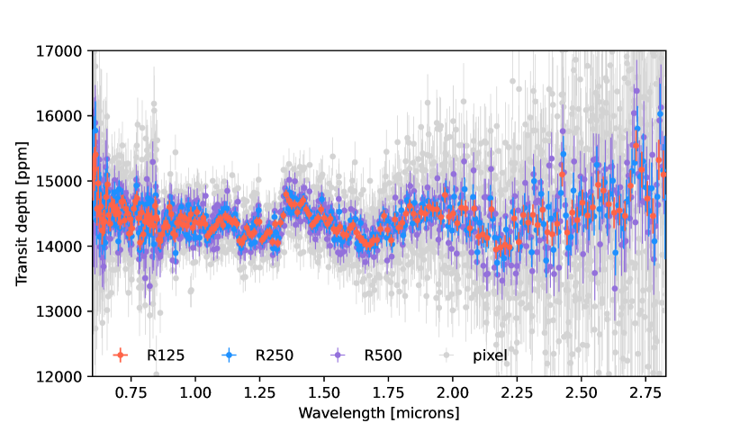
3 التحليل الطيفي
نستخدم نهجين مختلفين للنمذجة من أجل استكشاف غلاف WASP-96 b الجوي بصورة شاملة. الأول هو المقارنة بنماذج أمامية محسوبة باستخدام نماذج دوران عام 3D (GCMs). وتتيح لنا هذه النماذج استكشاف إمكانية تكوّن أنواع مختلفة من مكثفات السحب في غلاف WASP-96 b الجوي (مثلًا، Samra et al., 2023)، وأخذ الحركية الكيميائية في الاعتبار أيضًا (Zamyatina et al., 2023). والثاني هو تحليل استرجاع طيفي يتيح لنا استنتاج خصائص غلاف WASP-96 b الجوي، مثل تركيبه الكيميائي وبنيته الحرارية، مباشرة من طيف العبور لدى Radica et al. (submitted) (الشكل 1). ولتحليل الاسترجاع نستخدم أربعة أكواد مختلفة: CHIMERA (Line et al., 2013)، وAurora (Welbanks & Madhusudhan, 2021)، وPOSEIDON (MacDonald & Madhusudhan, 2017; MacDonald, 2023)، وPyratBay (Cubillos & Blecic, 2021) لضمان متانة التركيب الجوي الذي نسترجعه إزاء اختيار كود الاسترجاع. وتُفصَّل إعدادات النموذج لكل من النهجين أدناه.
3.1 النمذجة الأمامية 3D باستخدام GCMs
مع أن جميع الدراسات الرصدية السابقة لهذا الكوكب خلصت إلى غلاف جوي علوي خالٍ من السحب لـ WASP-96 b (Nikolov et al., 2018, 2022; McGruder et al., 2022)، فقد استكشف Samra et al. (2023) مؤخرًا فكرة إمكانية وجود سحب في غلاف هذا الكوكب الجوي. وينظر نموذجهم 3D من نوع GCM في نموذج حركي غير اتزاني لتكوّن جسيمات سحب من مواد مختلطة. وتظهر نماذج GCM لديهم أن السحب قد تكون بالفعل شائعة في مناطق الحد الفاصل ذات الضغط المنخفض في غلاف WASP-96 b الجوي، مع كون سحب السيليكات وأكاسيد المعادن أبرز أنواع المكثفات. ويستنتجون أن طيف العبور لدى Nikolov et al. (2022) يمكن أن تلائمه أيضًا نماذج غائمة. غير أن تحقق السحب التي يتنبأ بها النموذج الحركي في WASP-96 b يعتمد على ما إذا كانت محبوسة باردًا أسفل الفوتوسفير (Parmentier et al., 2016; Powell et al., 2018)، وهي آلية لا يمكن حاليًا حلها بنماذج الحركية.
ننفذ نمذجة GCM خاصة بنا للتحقق من معقولية أن يستضيف WASP-96 b سحبًا. في تحليل GCM الأول، نستخدم SPARC/MITgcm غير الرمادي (Showman et al., 2009). وعلى وجه التحديد، نستخدم الشبكة الكبيرة من النماذج التي أنشأها Roth et al. (in prep). يشبه إعداد GCM إلى حد كبير ما وُصف في Parmentier et al. (2018); Parmentier et al. (2021)، لكنه لا يأخذ تكاثف السحب في الاعتبار. وتمتد شبكة النماذج على مدى واسع من درجات حرارة الاتزان، وفلزية الغلاف الجوي، والفترة المدارية، والجاذبيات السطحية، ثم تُستوفى إلى معاملات WASP-96 b المحددة. غير أن معاملات أخرى مثل أنصاف أقطار الكواكب مثبتة، وللنماذج مقياس زمني للسحب غير منتهٍ. ثم تُستوفى المقاطع الحرارية الناتجة إلى معاملات نظام WASP-96 b.
تُقرأ المقاطع الحرارية في CHIMERA (انظر القسم 3.2.1 لمزيد من التفاصيل) لإنتاج طيف عبور لغلاف جوي له C/O شمسي وفلزية مقدارها 1 و10 شمسية. وتُعرض المقاطع الحرارية وأطياف العبور في الشكل 2. ولالتقاط فضاء معاملات مقطع PT الذي يغطيه مدى الفلزيات المدروسة لدينا، نمثل المقطع الشمسي 1 بخط متصل، وتمثل حافة المنطقة المظللة المقطع الشمسي 10. ويمكن ملاحظة أن بنى PT تقاطع منحنيات التكاثف لأنواع سحب مختلفة. وعلى وجه التحديد، يتنبأ SPARC/MITgcm بأن الطرف الصباحي يفضّل سحب Na2S عالية الارتفاع مع سحب MnS أعمق، بينما لا يمكن في الطرف المسائي أن يتكاثف إلا MnS في مناطق الضغط التي يسبرها العبور. وينبغي أن تتشكل سحب السيليكات فقط في حالة الفلزية الشمسية 1، وفقط في الطبقات العميقة من الغلاف الجوي (1 bar). وتبعًا لما إذا كان المزج الرأسي كبيرًا بما يكفي، يمكن أن تُخلط بكفاءة صعودًا إلى مستويات الضغط التي تسبرها الأرصاد أو تبقى محبوسة في الطبقات العميقة من الغلاف الجوي (Powell et al., 2018).
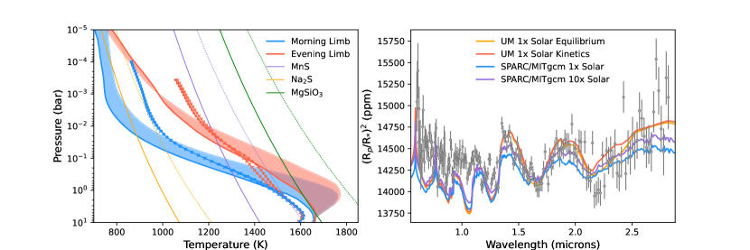
يستخدم تحليلنا الثاني بنماذج GCM Unified Model التابع لـ Met Office (UM) والمشغّل خصيصًا لـ WASP-96 b. استخدمنا الإعداد الأساسي نفسه للنموذج كما في Drummond et al. (2020) وZamyatina et al. (2023) مع التغييرات الآتية: (a) طيف PHOENIX BT-Settl النجمي (Rajpurohit et al., 2013) المطابق بدرجة وثيقة لـ WASP-96، و(b) معاملات WASP-96 b من Hellier et al. (2014)، و(c) UM الإصدار 11.6، مهيأً مع (d) مقطع الضغط-درجة الحرارة المتوسط على جانب النهار لـ WASP-96 b الذي حُصل عليه بنموذج كيمياء-إشعاع-حمل حراري 1D هو ATMO (Drummond et al., 2016) بافتراض الاتزان الكيميائي للأنواع الكيميائية الموجودة في شبكة Venot et al. (2012) الكيميائية. ونفترض كذلك أن الغلاف الجوي خالٍ من السحب/الضباب وله فلزية شمسية ونسبة C/O شمسية استنادًا إلى النمذجة الأولية لدى Radica et al. (submitted).
ضمن إطار UM، أجرينا محاكاتين، لكل منهما مخطط كيميائي مختلف: إحداهما تفترض الاتزان الكيميائي، والأخرى تستخدم مخطط حركية كيميائية يحسب إنتاج وفقد الأنواع الكيميائية الموجودة في شبكة Venot et al. (2019) الكيميائية المختزلة. وسنشير إلى هاتين المحاكاتين باسم "UM 1 solar equilibrium" و"UM 1 solar kinetics"، على الترتيب، مع أن المحاكاة الأخيرة تأخذ في الحسبان تغيرات العتامة ليس فقط بفعل التغيرات في الضغط ودرجة الحرارة، بل أيضًا بفعل انتقال الأنواع الكيميائية في الغلاف الجوي. يبيّن اللوح الأيسر من الشكل 2 أن كلتي محاكاتي UM تتنبأان بمقاطع PT متوسطة على الطرفين متشابهة (موزونة على جميع خطوط العرض و من خطوط الطول)، مع كون الطرف الصباحي أبرد من الطرف المسائي عند ضغوط 1 bar. وعلى خلاف SPARC/MITgcm، تشير مقاطع الضغط-درجة الحرارة من UM إلى أن سحب MnS وحدها يمكن أن تتشكل على طرفي WASP-96 b. ويرجع ذلك إلى أن UM يتنبأ بتدرج حراري أضحل عند ضغوط 10-2 bar، مما يجعل درجات حرارة UM أعلى بمقدار 100–200 K من تلك التي يتنبأ بها SPARC/MITgcm عند ضغوط قابلة للمقارنة. ويتنبأ كلا نموذجي GCM بمواقع متشابهة لطبقات سحب MnS على كلا الطرفين عندما تكون الفلزية المفترضة شمسية بمقدار 1. غير أنه نظرًا إلى أن معدل تنوي MnS منخفض نسبيًا (Gao et al., 2020)، فقد لا تتشكل هذه السحب بسرعة كافية لتكون عتامتها ذات صلة بـ WASP-96 b.
يبيّن اللوح الأيمن من الشكل 2 أن محاكاة كل من UM وSPARC/MITgcm تنتج أطياف عبور تتفق جيدًا مع طيف عبور JWST NIRISS/SOSS لـ WASP-96 b في النطاق 1.3–2.15 µm. غير أنه باتجاه الأزرق من 1.3 µm، تكون ميزات K وH2O مضعفة مقارنة بما تتنبأ به نماذج GCM الخالية من الضباب والسحب، مما يشير إلى وجود مصدر عتامة تشتتي. أما باتجاه الأحمر من 2.15 µm، فتتفق الأرصاد والنماذج بوجه عام، لكن أعماق العبور المرصودة تتغير بشدة مع الطول الموجي. ومن الجدير بالذكر خصوصًا المنطقة بين 2.15–2.5 µm، حيث تتنبأ محاكاة "UM 1 solar kinetics" بعمق عبور أعلى من محاكاة "UM 1 solar equilibrium". وينجم هذا الاختلاف عن تعزيز وفرة CH4 بسبب الإخماد الناتج عن النقل، وهو ما لا تلتقطه إلا محاكاة حركية UM. غير أننا لا نستطيع التمييز بقوة بين هاتين الحالتين بالبيانات الحالية. وثمة اختلاف آخر يتمثل في أن SPARC/MITgcm ذي التركيب الشمسي يتنبأ بدرجات حرارة طرفية أبرد من محاكاة UM، ولذلك تكون الميزات الطيفية لـ SPARC/MITgcm أضحل من الأرصاد. غير أن فلزية SPARC/MITgcm الشمسية 10 تؤدي إلى مقطع حراري أكثر سخونة ومن ثم إلى مطابقة أفضل للبيانات. يبرز هذا الاختلاف الاعتماد الذاتي للأرصاد على إطار النمذجة عند استخدام نماذج GCM معقدة 3D (Showman et al., 2020).
بوجه عام، يوفر كلا نموذجي GCM صافيي السماء المستخدمين في هذه الدراسة توافقًا جيدًا مع طيف عبور JWST NIRISS/SOSS الخاص بنا لـ WASP-96 b. غير أننا لا نستطيع التمييز بقوة بين نماذج فلزية شمسية 1 و10 بالبيانات الحالية، كما أن كلا النموذجين يجد صعوبة في إعادة إنتاج الأرصاد باتجاه الأزرق من 1.3 µm. وهذا يدفع أكثر نحو تحقيق معمّق باستخدام الاسترجاعات الجوية.
3.2 الاسترجاع الجوي
تُعد الاسترجاعات الجوية أداة قوية لاستخلاص معلومات عن غلاف كوكب خارجي مباشرة من البيانات (Madhusudhan & Seager, 2009). نستكشف البيانات بطريقة هرمية، من نماذج بسيطة (مثل نماذج خالية من السحب، وفرات حرة، ومتساوية الحرارة) إلى نماذج معقدة (مثل إدراج الضباب والسحب، والاتزان الكيميائي، وغير متساوية الحرارة)، باستخدام أكواد استرجاع متعددة. المجموعة الأولى من الاسترجاعات التي نجريها هي استرجاعات ‘كيمياء حرة’، تستنتج مباشرة نسب الخلط الحجمية (VMR) لمجموعة من الأنواع الكيميائية المفترض وجودها في الغلاف الجوي (وتُفترض ثبات VMRs مع الارتفاع). وافترض كل إطار استرجاع أن الغلاف الجوي تهيمن عليه H2 – كما هو متوقع للأجسام ذات الخصائص الفيزيائية الشبيهة بزحل – وأدرج الجزيئات نفسها كمصادر عتامة. وتستخدم جميع الأطر معاملات نظام WASP-96 المبلغ عنها في Hellier et al. (2014). أما المجموعة الثانية من الاسترجاعات فتُجرى بافتراض أن الوفرات الرأسية للأنواع الكيميائية في اتزان كيميائي حراري.
لتفسير أرصادنا لـ WASP-96 b تفسيرًا متينًا، نوظّف أربعة أطر استرجاع مختلفة: CHIMERA (Line et al., 2013)، وAurora (Welbanks & Madhusudhan, 2021)، وPOSEIDON (MacDonald & Madhusudhan, 2017; MacDonald, 2023)، وPyratBay (Cubillos & Blecic, 2021). ويتيح لنا نهج الاسترجاعات المتعددة مقارنة نتائجنا في نظام البيانات عالية الدقة (Barstow et al., 2020; Barstow et al., 2022)، وبذلك نكمّم ثبات استنتاجاتنا الجوية إزاء تطبيقات النماذج. الجزيئات المشتركة بين كل كود هي: H2O، وCO، وCO2، وCH4، وNH3، وHCN، وNa، وK، ولها سابق U(,)22 2 باستثناء Aurora الذي له U(,) (Welbanks et al., 2019) لجميع VMRs. ويُشرح إعداد كل كود في الأقسام الفرعية الآتية. وفضلًا عن ذلك، يُستخدم CHIMERA أيضًا لتشغيل استرجاع اتزان كيميائي بوصفه اختبارًا إضافيًا.
3.2.1 CHIMERA
نستخدم CHIMERA33 3 يمكن العثور على الكود مفتوح المصدر هنا: https://github.com/mrline/CHIMERA لإجراء استرجاعات طيفية حرة ومتسقة كيميائيًا. CHIMERA هو الإطار الوحيد في هذه الدراسة الذي يستخدم نهج correlated- (Lacis & Oinas, 1991) عند حساب الانتقال عبر الغلاف الجوي. تُحسب جداول بدقة R=3000؛ وبيانات الخط بخط المستخدمة لحساب جداول مأخوذة من المصادر الآتية: H2O (Polyansky et al., 2018; Freedman et al., 2014)، وCO2 (Freedman et al., 2014)، وCO (Rothman et al., 2010a)، وCH4 (Rothman et al., 2010a)، وHCN (Barber et al., 2014)، وNa (Kramida et al., 2018; Allard et al., 2019)، وK (Kramida et al., 2018; Allard et al., 2016a)، وحُسبت باتباع الطرق الموصوفة في Gharib-Nezhad et al. (2021); Grimm et al. (2021). نفترض أن الغلاف الجوي تهيمن عليه H2، مع نسبة He/H2 مقدارها 0.1764؛ ولذلك ننمذج أيضًا امتصاص التصادم المستحث (CIA) لـ H2-H2 وH2-He (Richard et al., 2012).
لحساب البنية الحرارية، نستخدم المعلمة الموصوفة في Madhusudhan & Seager (2009). يقسّم هذا النهج الغلاف الجوي إلى ثلاث طبقات: الغلاف الجوي العلوي، حيث لا يمكن حدوث انقلاب، ومنطقة وسطى يمكن فيها حدوث انقلاب، وطبقة عميقة تكون فيها البنية الحرارية متساوية الحرارة. وننظر أيضًا في سيناريو تكون فيه بنية درجة الحرارة متساوية الحرارة، ونجد أن الوفرات لا تعتمد على معلمات البنية الحرارية. كما ننظر في غلاف جوي يوصَّف فقط بنموذج متساوي الحرارة، ويمكن ملاحظة أن جميع الاسترجاعات تميل نحو بنية حرارية متساوية الحرارة 4.
تهدف استرجاعاتنا المتسقة كيميائيًا إلى استكشاف أثر الاقتران الفيزيائي بين تركيب الغلاف الجوي وبنيته الحرارية. وعلى وجه التحديد، يُفترض أن الوفرات الرأسية الجزيئية والذرية في اتزان كيميائي حراري. تُحسب وفرات الاتزان باستخدام نموذج NASA CEA (Chemical Equilibrium with Applications) (Gordon & McBride, 1994) لقيمة معطاة من C/O والفلزية والبنية الحرارية. ولذلك تكون نسبة C/O والفلزية معاملين حرين في هذه الاسترجاعات بدلًا من الوفرات الكيميائية نفسها.
ننمذج الضباب باتباع وصف Lecavelier Des Etangs et al. (2008)، الذي يعامل الضباب بوصفه تشتت رايلي H2 معززًا ذا ميل قانون قوة حر. وتعبّر هذه المعلمة عن العتامة بصيغة ، حيث هو عامل تعزيز رايلي و هو ميل التشتت (يساوي لتشتت رايلي H2). و هو مقطع رايلي العرضي لـ H2 عند ، المعطى بـ 2.310-27 cm2 و430 nm على الترتيب. وبجانب حساب الضباب، نلائم سحابة رمادية ثابتة مع الطول الموجي بعتامة . ولذلك نطلق على هذا النموذج اسم “نموذج الضباب البسيط + السحابة".
3.2.2 Aurora
نكمّل تحليلنا الجوي باستنتاج خصائص غلاف WASP-96 b الجوي باستخدام Aurora Welbanks & Madhusudhan (2021)، وهو إطار استرجاع جوي بايزي لتفسير الأرصاد الأرضية والفضائية للكواكب الخارجية العابرة. يتبع إعداد نموذجنا الجوي عمومًا نهجًا مشابهًا للدراسات الجوية السابقة (مثلًا، Welbanks & Madhusudhan, 2019) مع السوابق نفسها لـ WASP-96 b كما في تحليل أرصاد VLT القائمة (Nikolov et al., 2018) المعروض في Welbanks et al. (2019). يحسب نموذجنا الجوي النقل الإشعاعي خطًا بخط في هندسة العبور في غلاف جوي مستوٍ متوازٍ. وتفترض بنية الضغط للغلاف الجوي اتزانًا هيدروستاتيكيًا لجاذبية متغيرة مع الارتفاع، في شبكة من 100 طبقة موزعة بانتظام في لوغاريتم الضغط من إلى 100 bar. ويُجرى الاستدلال البايزي باستخدام إطار MultiNest (Feroz et al., 2009) عبر تطبيقه في Python المسمى PyMultiNest (Buchner et al., 2014) باستخدام 2000 نقطة حية.
نستكشف سلسلة من سيناريوهات النماذج الجوية باستخدام Aurora، بما في ذلك إمكانية السحب والضباب متعددة الأبعاد (مثلًا، Welbanks et al., 2019)، وعدم تجانس الحد الفاصل (مثلًا، Welbanks & Madhusudhan, 2022)، وافتراضات نمذجة أخرى تتعلق بعدد المعاملات الحرة في استرجاعاتنا (مثلًا، Welbanks & Madhusudhan, 2019). ومن خلال هذا الاستكشاف للنماذج حددنا نموذجًا مرجعيًا ذا 19 معاملًا لتحليل ‘الاسترجاع الحر’ باستخدام Aurora وأطر مشابهة أخرى. يأخذ إعداد النموذج هذا في الاعتبار بنية ضغط-حرارة غير متساوية الحرارة موصوفة باستخدام وصف Madhusudhan & Seager (2009) ذي المعاملات الستة. وتؤخذ ثمانية مصادر للعتامة في نماذجنا. هذه الأنواع، المتوقع أن تكون الممتصات الرئيسية للعمالقة الغازية الحارة (مثلًا، Madhusudhan, 2019)، توصف بنسب خلطها الحجمية اللوغاريتمية المفترض ثباتها مع الارتفاع. الأنواع وقوائم خطوطها المقابلة هي CH4 (Yurchenko & Tennyson, 2014; Yurchenko et al., 2017)، وCO (Rothman et al., 2010b)، وCO2 (Rothman et al., 2010b)، وH2O (Rothman et al., 2010b)، وHCN (Barber et al., 2014)، وK (Allard et al., 2016b)، وNa (Allard et al., 2019)، وNH3 (Yurchenko et al., 2011). وندرج كذلك امتصاص التصادم المستحث H2–-H2 وH2–He (CIA; Richard et al., 2012) وتشتت رايلي H2 (Dalgarno & Williams, 1962). وتُحسب العتامات باتباع الطرق الموصوفة في Gandhi & Madhusudhan (2017, 2018); Gandhi et al. (2020) وWelbanks et al. (2019).
نأخذ وجود السحب والضباب في نماذجنا الجوية في الاعتبار باستخدام استراتيجية النمذجة للتغطية غير المتجانسة للحد الفاصل المعروضة في Line & Parmentier (2016). وننظر في وجود ضباب مشتت بوصفه انحرافات عن تشتت رايلي في النماذج، باتباع معلمة Lecavelier Des Etangs et al. (2008) كما وُصفت أعلاه. ويُدرج الأثر الطيفي للسحب عبر النظر في وجود طبقات سحب كثيفة بصريًا عند مستوى ضغط محدد. ويُنفذ الجمع بين السحب والضباب غير المتجانسين باتباع وصف القطاع الواحد كما شُرح في Welbanks et al. (2019) باستخدام أربعة معاملات حرة إضافية. وأخيرًا، نستخدم معاملًا حرًا واحدًا لاستنتاج الضغط المرجعي الموافق لنصف القطر الكوكبي المفترض. ولمقارنة أطيافنا عالية الدقة (R30,000) بأرصاد NIRISS/SOSS، نتبع استراتيجية تجميع النماذج المعروضة في Pinhas et al. (2018).
3.2.3 POSEIDON
كود الاسترجاع الجوي الثالث الذي نستخدمه هو POSEIDON (MacDonald & Madhusudhan, 2017; MacDonald, 2023). يُعد POSEIDON كودًا راسخًا للنمذجة الجوية والاسترجاع الطيفي، وصدر مؤخرًا حزمة Python مفتوحة المصدر44 4 يتوفر POSEIDON هنا: https://github.com/MartianColonist/POSEIDON (MacDonald, 2023). وتُوصف تقنية النقل الإشعاعي الكامنة وراء نموذج طيف العبور الأمامي في POSEIDON في MacDonald & Lewis (2022). ويعين استرجاعنا باستخدام POSEIDON فضاء المعاملات بخوارزمية المعاينة المتداخلة البايزية MultiNest، المنشورة عبر غلاف Python الخاص بها PyMultiNest (Feroz et al., 2009; Buchner et al., 2014).
يستخدم تحليل استرجاع WASP-96 b باستخدام POSEIDON نموذجًا ذا 19 معاملًا يأخذ في الحسبان مقاطع ضغط-حرارة غير متساوية الحرارة، وسحبًا وضبابًا غير متجانسين، والأنواع الكيميائية الثمانية المشتركة الموصوفة أعلاه. يرمّز معامل واحد نصف القطر الكوكبي عند نصف قطر مرجعي 10 mbar. ويتبع مقطع PT ذو المعاملات الخمسة وصف Madhusudhan & Seager (2009)، مع تعديله لوضع معامل درجة الحرارة المرجعية عند 10 mbar. ويتبع نموذج الهباء غير المتجانس ذي المعاملات الأربعة MacDonald & Madhusudhan (2017). وأخيرًا، تحدد ثمانية معاملات الوفرات الحرة الثابتة مع الارتفاع لـ H2O، وCO، وCO2، وCH4، وHCN، وNH3، وNa، وK. يبني النموذج غلافًا جويًا يمتد من – bar، مع 100 طبقة موزعة بانتظام في لوغاريتم الضغط، ويفترض غلافًا خلفيًا تهيمن عليه H2 + He بنسبة He/H2 = 0.17. واستخدم الاسترجاع البايزي لفضاء المعاملات ذي 19 معاملًا هذا 1,000 نقطة حية من PyMultiNest.
عند كل موضع في فضاء المعاملات، حسب POSEIDON أطياف عبور WASP-96 b بدقة 20,000 من 0.55–2.9 µm. يستخدم النقل الإشعاعي أخذ عينات العتامة من مقاطع عرضية مسبقة الحساب عالية الدقة () من مصادر قوائم الخطوط الآتية: H2O (Polyansky et al., 2018)، وCO (Li et al., 2015)، وCO2 (Tashkun & Perevalov, 2011)، وCH4 (Yurchenko et al., 2017)، وHCN (Barber et al., 2014)، وNH3 (Coles et al., 2019)، وNa (Ryabchikova et al., 2015)، وK (Ryabchikova et al., 2015). كما ندرج عتامة الاتصال من H2 وHe CIA (Karman et al., 2019) وتشتت رايلي H2 (Hohm, 1994). نطوي كل طيف نموذجي بدقة 20,000 بدالة انتشار النقطة للأداة (PSF)، قبل تجميعه إلى دقة الأرصاد (هنا، ) لحساب أرجحية كل تركيب من المعاملات. ونعالج رتبتي NIRISS/SOSS 1 و2 كلًا على حدة أثناء إجراء الطي والتجميع، آخذين في الحسبان اختلاف دوال PSF الذاتية ودوال انتقال الأداة بينهما.
3.2.4 PyratBay
أخيرًا، استخدمنا أيضًا PyratBay، أي النقل الإشعاعي في Python ضمن إطار بايزي. PyratBay55 5 يمكن العثور على كود PyratBay مفتوح المصدر هنا: https://pyratbay.readthedocs.io/en/latest/ هو إطار مفتوح المصدر لنمذجة أجواء الكواكب الخارجية، والتركيب الطيفي، والاسترجاع البايزي. يستخدم أحدث مصادر العتامة خطًا بخط من ExoMol (Tennyson et al., 2016)، وHITEMP (Rothman et al., 2010a)، والأنواع الذرية Na وK (Burrows et al., 2000)، والعتامات المستحثة بالتصادم لأزواج H2-H2 (Borysow et al., 2001; Borysow, 2002) وأزواج H2-He (Borysow et al., 1988, 1989; Borysow & Frommhold, 1989). وللاستخدام الفعال في الاسترجاع، نضغط قواعد البيانات الكبيرة هذه (مع الاحتفاظ بالمعلومات من الانتقالات الخطية المهيمنة) باستخدام الحزمة المتاحة (Cubillos, 2017). لنمذجة البنية الرأسية لدرجة الحرارة، نطبق ثلاثة مخططات معلمة: متساوي الحرارة، ووصف Line et al. (2013) ووصف Madhusudhan & Seager (2009). ويطبق إطار الاسترجاع هذا أيضًا مخطط اتزان إشعاعي-حملي ذاتي الاتساق 1D (Malik et al., 2017)، والوصف الكلاسيكي “قانون القوة + الرمادي”، ومقطع ضباب “حجم جسيم واحد”، ووصف “السحب المرقعة” لهندسة العبور (Line & Parmentier, 2016)، ونموذجين معقدين للسحب بتشتت Mie. الأول هو نموذج سحب حركي ميكروفيزيائي ذاتي الاتساق بالكامل لـ Helling & Woitke (2006) يتتبع تكوّن جسيمات البذور، ونمو مواد صلبة متعددة، والتبخر، والترسيب الجذبي، والاستنزاف العنصري والتجديد (Blecic et al., 2023). والآخر هو نموذج سحابي معلمي للاستقرار الحراري بتشتت Mie (Kilpatrick et al., 2018; Venot et al., 2020).
في هذا العمل، افترضنا أن غلاف WASP-96 b الجوي يهيمن عليه الهيدروجين (He/H2 = 0.17)، وأدرجنا الامتصاص المستحث بالتصادم لـ H2-H2 وH2-He. وأدرجنا مصادر العتامة الجزيئية H2O (Polyansky et al., 2018)، وCH4 (Hargreaves et al., 2020)، وNH3 (Yurchenko et al., 2011; Yurchenko, 2015)، وHCN (Harris et al., 2006, 2008)، وCO (Li et al., 2015)، وCO2 (Rothman et al., 2010b)، والمقاطع العرضية لخطوط الرنين لـ Na وK. إضافة إلى ذلك، نأخذ في الحسبان مقطع تشتت رايلي العرضي لـ H2 (Dalgarno & Williams, 1962) وجسيمًا ضبابيًا مجهولًا، بتطبيق وصف قانون قوة لـ Lecavelier Des Etangs et al. (2008). يستخدم روتين النقل الإشعاعي لدينا أخذ عينات العتامة من جداول مقاطع عرضية مسبقة الحساب عالية الدقة مولدة عند دقة R4107، ويحسب أطياف العبور عند 20,000، ويحسب أرجحية كل نموذج بتجميعه إلى دقة . أنشأنا الغلاف الجوي بين – bar، مع 81 طبقة موزعة بانتظام في لوغاريتم الضغط، مسترجعين، إضافة إلى نسب الخلط الحجمية الجزيئية والقلوية الثابتة مع الارتفاع المذكورة أعلاه، معاملات ضباب Lecavelier Des Etangs et al. (2008) ونصف القطر الكوكبي عند الضغط المرجعي 0.1 bar. ولإيجاد أفضل إعداد للنمذجة، اختبرنا معلمات درجة الحرارة المتاحة لدينا والمدى الكامل لنماذج السحب من البسيطة إلى سحب تشتت Mie المعقدة، بافتراض الأنواع المتوقع رؤيتها في أنظمة درجات الحرارة هذه. وقارنّا هذه النماذج باستخدام معيار المعلومات البايزية (BIC Liddle, 2007). وجدنا أدنى BIC للنموذج الذي يفترض وصف درجة الحرارة لدى Madhusudhan & Seager (2009) مع طبقة سحابية معتمة مرقعة وضباب، آخذًا في الحسبان كلًا من جسيمات وضباب Lecavelier Des Etangs et al. (2008) وDalgarno & Williams (1962) وعتامات من H2O وCO2 وCO وNa وK. ولاستكشاف فضاء الطور لهذه المعاملات، قرنّا نموذجنا الجوي بخوارزمية المعاينة المتداخلة البايزية PyMultiNest (Feroz et al., 2009; Buchner et al., 2014) وكود مونت كارلو ماركوف متعدد الأنوية MC3 (Cubillos et al., 2016). وأعادت كلتا الخوارزميتين القيود نفسها.
4 النتائج
في هذا القسم نعرض نتائج تحليل الاسترجاع لدينا. ونناقش أيضًا أثر دقة البيانات في الوفرات التي نستنتجها.
4.1 الاسترجاعات
باستخدام الأطر الموصوفة أعلاه، نستنتج خصائص غلاف WASP-96 b الجوي من أرصاد NIRISS/SOSS المجمعة إلى أربع دقات ثابتة مختلفة (R = 125، و250، و500، ومستوى البكسل). وكما نناقش أدناه (انظر القسم 4.2)، نجد أن استنتاجاتنا متينة بغض النظر عن دقة الأرصاد المجمعة. لذلك، نعرض نتائجنا باستخدام الأرصاد المجمعة عند R = 125 من أجل الوضوح. اعتبارنا الأول هو إمكانية وجود السحب والضباب. وكما وُصف أعلاه، تحسب أطرنا الجوية سيناريوهات تمثل أجواء خالية من السحب، وأجواء ضبابية، وأجواء غائمة، وأجواء ذات تغطية غير متجانسة من السحب والضباب. وبمقارنة هذه السيناريوهات الجوية باستخدام دليلها البايزي ومقارنتها بمقياس ‘sigma’ (مثلًا، Benneke & Seager, 2013; Welbanks & Madhusudhan, 2021)، نجد تفضيلًا للنموذج مقداره 6 للسحب والضباب غير المتجانسين مقارنة بالأجواء البسيطة الخالية من السحب. غير أننا نلاحظ أن ما نكشفه أساسًا هو ميل تشتت رايلي لا عتامة من طبقة سحابية رمادية (انظر القسم 4.1.2). ومن ثم نحصر مناقشتنا فيما يلي في تشغيلات نموذج “السحب والضباب غير المتجانسين”.
قد يؤدي استخدام أوصاف أكثر تعقيدًا تفصل الآثار الطيفية للسحب عن آثار الضباب عبر حدود فاصلة غير متجانسة (مثلًا، Welbanks & Madhusudhan, 2021) إلى تفضيلات نموذجية أقل، لكنها تعطي خصائص جوية مستنتجة متسقة. ويمكن العثور على توزيعات اللاحق المسترجعة كاملة لـ Aurora وPOSEIDON وPyratBay وCHIMERA في الأشكال 7، و8، و9، و10 على الترتيب.
4.1.1 الوفرات المسترجعة
تُعرض نتائج تشغيلات نموذج الضباب والسحب غير المتجانسين لجميع الأطر الأربعة في الشكل 4، حيث نعرض أطياف العبور الأفضل ملاءمة، والبنية الحرارية، والتوزيعات اللاحقة لـ H2O وCO وCO2 وNa وK. ولا نعرض التوزيعات اللاحقة لـ NH3 أو HCN أو CH4 لأنها تبقى في معظمها غير مقيدة في ظل الأرصاد الحالية. وتُلخص الوفرات المسترجعة من جميع الأكواد في الجدول 1، وتبقى عمومًا متسقة ضمن 1-، مما يبيّن أن الخصائص الجوية المسترجعة متينة إزاء تطبيقات نمذجة مختلفة. كما أنها متسقة إلى حد كبير مع غلاف جوي ذي فلزية شمسية، بما يتفق مع تفسير Radica et al. (submitted) باستخدام نماذج اتزان إشعاعي كيميائي حراري ذاتية الاتساق.
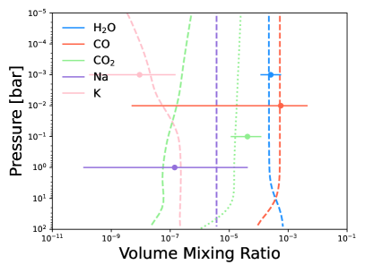
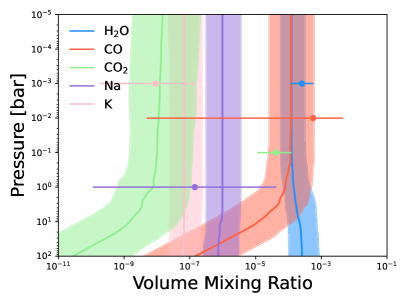
| log(H2O) | log(CO) | log(CO2) | log(Na) | log(K) | |
|---|---|---|---|---|---|
| Aurora | |||||
| CHIMERA | |||||
| POSEIDON | |||||
| PyratBay | |||||
| Solar (1200K @ 1mbar) |
باستخدام إطار Aurora، نقيم بعد ذلك دلالة كشف كل جزيء. ويتم ذلك بحساب الدليل البايزي لنموذج يخلو من كل جزيء ومقارنته بالنموذج الأصلي الذي يضم جميع الأنواع. ونعرض التفصيل في الجدول 2.
| Chemical Species | log(VMR) | Detection significance () |
|---|---|---|
| H2O | -3.59 | 16.8 |
| CO | -3.25 | 1.72 |
| CO2 | -4.38 | 2.88 |
| Na | -6.85 | 1.24 |
| K | -8.04 | 2.02 |
| Clouds and Hazes | - | 6.69 |
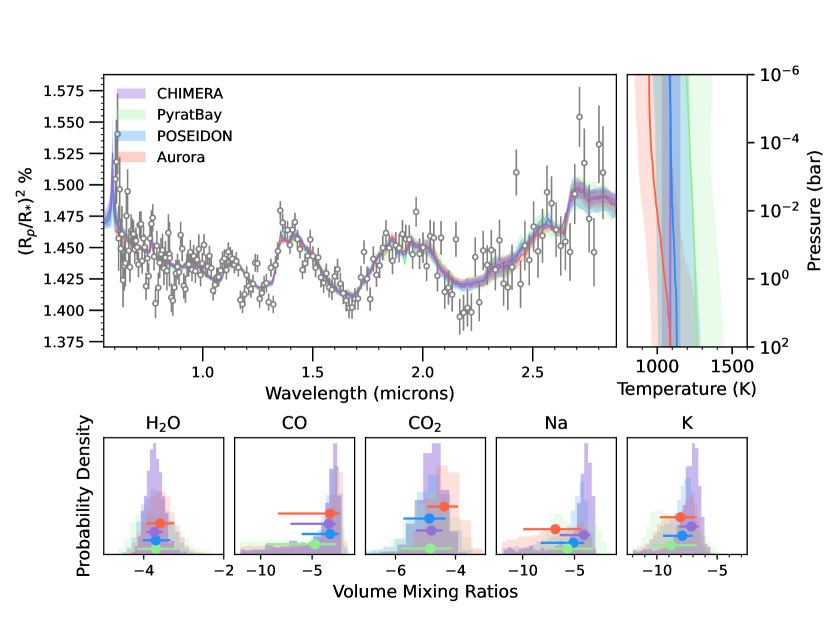
كاختبار نهائي، نجري استرجاعًا متسقًا كيميائيًا على البيانات نفسها باستخدام CHIMERA من أجل استرجاع log(C/O) وlog(Met) للغلاف الجوي مباشرة. وكما في الاسترجاع الحر، نلائم نموذج الضباب البسيط + السحابة. نجد أن log(C/O) = وlog(Met) = ، حيث القيم الشمسية هي log(C/O) = وlog(Met) = 0. ونعرض التوزيع اللاحق الكامل لهذه المحاكاة في الشكل 11. ومن ثم نجد أن البيانات متسقة مع نموذج له نسبة C/O شمسية ضمن 1 وفلزية شمسية ضمن 1. وتتسق هذه النتائج مع عمل النمذجة المعروض في Radica et al. (submitted). ونبيّن كذلك الاتساق مع Radica et al., (submitted) في الشكل 3؛ إذ يقارن اللوح الأيسر نتائج الاسترجاع الحر بنسب الخلط الحجمية المستخلصة من أفضل نموذج ملاءمة في Radica et al., (submitted)، ويمكن ملاحظة أن الوفرات التي حصلنا عليها في استرجاعنا الحر متسقة مع هذه المقاطع. والقيمة الشاذة هي وفرة CO2، التي نجد أنها متسقة مع نسبة خلط حجمية قدرها 10x شمسية. ويعرض اللوح الأيمن نسب الخلط الحجمية المسترجعة لإطار الاتزان الكيميائي، وهي مرة أخرى متسقة مع الاسترجاع الحر ونماذج Radica et al., (submitted).
4.1.2 معاملات السحب المسترجعة
نصف بمزيد من التفصيل تفضيل النموذج للسحب والضباب غير المتجانسين مقارنة بالنموذج الخالي من السحب الموصوف أعلاه. تشير النماذج التي تأخذ وجود سحب وضباب غير متجانسين في الاعتبار إلى أن كسرًا كبيرًا (70% أي Aurora؛ و0.74 CHIMERA؛ و0.91 POSEIDON؛ و0.81 PyratBay) من الحد الفاصل الكوكبي مغطى إما بسحب أو بضباب مشتت. غير أن الضغط المسترجع الذي توجد عنده طبقة السحب يكون مرتفعًا باستمرار ( Aurora؛ و0.38 POSEIDON؛ و0.2 PyratBay)، مما يشير إلى أن الأثر الطيفي لهذه السحب الرمادية ضئيل. وبالمثل، فإن عتامة السحب المنخفضة (مثلًا، log() = -32.66) المسترجعة في تحليل CHIMERA لدينا تشير إلى أثر منخفض بسبب السحب.
من ناحية أخرى، تشير خصائص تشتت الضباب التي نستنتجها إلى أنها تقدم إسهامًا مهمًا في أرصادنا لـ WASP-96 b. وفي حين يُسترجع ميل التشتت على أنه شبيه إلى حد كبير برايلي (أي، Aurora؛ و CHIMERA؛ و POSEIDON؛ و PyratBay)، فإن الميل معزز بأكثر من رتبة مقدار واحدة ( Aurora؛ و1.70 POSEIDON؛ و2.49 PyratBay). وتبقى الاستنتاجات من استرجاعات الاتزان الكيميائي باستخدام CHIMERA متفقة إلى حد كبير وتشير إلى بصمات طيفية لتشتت رايلي لا للسحب (مثلًا، log10() = ، و = ، وlog10() = وf = 0.93). وهكذا تخبرنا جميع النماذج بقصة غلاف جوي يحوي جسيمات هباء صغيرة تنتج ميل تشتت رايلي عند الأطوال الموجية القصيرة، لكن من دون دليل على طبقة سحابية رمادية، وهو، كما في حالة استنتاجاتنا الكيميائية أعلاه، متسق مع تفسير Radica et al. (submitted).
4.2 اختبار الدقة
يمكن أن تكون الاسترجاعات الجوية مكلفة حاسوبيًا، وتُعد الدقة الطيفية للنموذج الأمامي عاملًا كبيرًا في تحديد سرعة الحساب. ولدراسة طيف غلاف كوكب خارجي دراسة شاملة، يحتاج المرء إلى إجراء دراسات استرجاع متعددة، تتطلب كل دراسة نحو 104 إلى 105 حسابًا للنموذج؛ وهو ما قد يصبح غير عملي عند الدقة الأصلية R700 لـ NIRISS/SOSS. في هذا القسم، نسعى إلى الإجابة عن السؤال: هل نستنتج الوفرات نفسها إذا جمعنا بيانات الدقة الأصلية إلى دقات أدنى؟
للإجابة عن ذلك نجري تحليل استرجاع على ثلاث دقات مختلفة لطيف العبور: R = 125، وR = 250، وR = 500، كما هو مبين في الشكل 1. نستخدم النموذج المعلمي نفسه المعروض في الشكل 4 وجداول correlated- المحسوبة عند R=3000؛ ومن ثم فإن للنموذج دقة أكبر بست مرات من الدقة القصوى للبيانات. ونجد أن الوفرات المسترجعة لبيانات بدقة R=125 هي نفسها لبيانات بدقة R=500. ولذلك لا تُفقد معلومات عند تجميع البيانات. ونعرض التوزيعات اللاحقة لـ H2O وCO2 وK في الشكل 5. وتوافق الألوان تلك الواردة في الشكل 1.
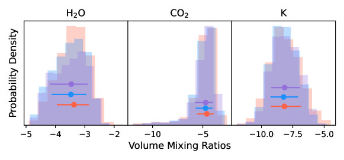
5 المناقشة
منذ أن كشفت أولى الأرصاد الأرضية لـ WASP-96 b بواسطة Nikolov et al. (2018) عن أجنحة Na متسعة بالضغط، حظي الكوكب بامتياز فريد كونه أحد الكواكب الخارجية القليلة المعروفة بأنها "خالية من السحب". وأضافت دراسات لاحقة (Nikolov et al., 2022; McGruder et al., 2022) أعماق عبور HST/WFC3، فضلًا عن أرصاد عبور أرضية إضافية من Magellan/IMACS، غير أن الاستنتاج المتعلق بطبيعة الغلاف الجوي العلوي لـ WASP-96 b الخالية من السحب بقي دون تغيير. ومع ذلك، وجدت نماذج GCM لدى Samra et al. (2023) أن منطقة الحد الفاصل لـ WASP-96 b ينبغي أن تكون مغطاة بالكامل بالسحب بالنظر إلى البنية الحرارية للكوكب. علاوة على ذلك، يبيّنون أن أطياف العبور الغائمة يمكن أن توفر ملاءمة جيدة مماثلة لمجموعة بيانات العبور التي حُللت في Nikolov et al. (2022).
يتنبأ نموذجا GCM المستقلان لدينا أيضًا بأن السحب ينبغي أن تكون قادرة على التشكّل عند الحد الفاصل لـ WASP-96 b في مناطق الضغط المسبرة بمطيافية العبور (انظر الشكل 2). وتتنبأ هذه النماذج بأن الغلاف الجوي تهيمن عليه على الأرجح سحب MnS وNa2S. وينبغي أن تتشكل سحب MgSiO3 في الطبقات العميقة من الغلاف الجوي، ولن تكون قابلة للرصد إلا إذا كان المزج الرأسي كبيرًا للغاية بحيث يعيد تزويد الغلاف الجوي العلوي بسهولة بمواد مكوّنة للسحب، وهو افتراض ملازم لحساب Samra et al. (2023).
قد يكون أحد حلول هذا التباين أن جسيمات أصغر مما تنبأ به Samra et al. (2023) تتشكل بكميات أكبر عند ضغوط منخفضة في غلاف WASP-96b الجوي. ويمكن أن تكون هذه مكونة من أو KCl، اللذين يتشكلان طبيعيًا عند ضغوط أقل بكثير من سحب السيليكات التي تهيمن على تركيب السحب في مدى 100 إلى 10 mbar. غير أن كشف الصوديوم والبوتاسيوم في غلاف WASP-96b الجوي يبدو أنه يستبعد هذا الاحتمال. وMnS مرشح آخر لتشكيل سحب عند ضغوط منخفضة (Parmentier et al., 2016; Morley et al., 2012)، إلا أن Gao et al. (2020) يتنبأ بأن معدلات التنوي لـ MnS منخفضة جدًا بحيث لا تكاد تتشكل. وخيار آخر هو تكوّن طبقة ضباب عالية الارتفاع مؤلفة من جسيمات منتجة كيميائيًا ضوئيًا. ومن المعروف أن الكيمياء الضوئية تكوّن طبيعيًا جسيمات صغيرة عند ضغوط منخفضة قادرة على إنتاج ميول تشتت قوية (Lavvas & Koskinen, 2017; Kawashima & Ikoma, 2019; Helling et al., 2020; Steinrueck et al., 2021). ويمكن جمع معلومات إضافية عن تركيب السحب باستهداف الميزات الرنانة للمواد المكوّنة للسحب في نطاق مرور JWST/MIRI LRS.
نلاحظ كذلك أن كشفنا لميل تشتت قوي في المجال البصري منحط جزئيًا مع وفرة الصوديوم الغازي في الغلاف الجوي. وبالفعل، عندما لا يُدرج ميل تشتت في الاسترجاعات، نحصل على وفرات قلوية غير فيزيائية (مثلًا، مع CHIMERA). غير أن إدراج تشتت رايلي المعزز يخفض وفرات Na إلى قيم شمسية إلى فوق شمسية قليلًا، بما يتفق مع Nikolov et al. (2022). ومن ثم يلزم تفسير الوفرات المستنتجة لدينا لـ Na ووجود ميل تشتت بحذر بسبب هذا الانحطاط، الذي تقوده حقيقة أن نطاق مرور NIRISS/SOSS ينقطع عند 0.6 µm، ولذلك لا يستطيع إلا سبر الجناح الأحمر لميزة Na. ومن دون حل ذروة ميزة Na حلًا كاملًا، يصعب التفريق بين ميل ناجم عن ضباب تشتت رايلي، أو الجناح الأحمر لميزة Na متسعة. ويلزم إجراء مزيد من العمل لفهم هذا الانحطاط بصورة أعمق في سياق الأرصاد باستخدام NIRISS/SOSS.
5.1 المقارنة مع Radica et al., (submitted)
قورنت مجموعة من النماذج الأمامية بالبيانات في مقالتنا المصاحبة (Radica et al., submitted). استُخدمت ثلاث شبكات مختلفة من النماذج: PICASO وATMO وScCHIMERA، منتجة صورة لغلاف جوي له فلزية شمسية 1 – 5 ونسبة C/O شمسية. وتبيّن نتائج الاسترجاع الحر لدينا أننا نحصل على وفرة H2O متسقة مع القيم الشمسية ووفرة CO2 فوق شمسية، مما يبيّن أن نتائجنا متسقة مع Radica et al., submitted. وعلى غرار Radica et al., submitted، نحتاج إلى استدعاء ميل تشتت رايلي معزز لمطابقة الأرصاد عند أقصر الأطوال الموجية، لكننا لا نجد أثرًا طيفيًا من طبقة سحابية رمادية. نقارن نسب الخلط الحجمية الرأسية المستخلصة من أفضل نموذج ScCHIMERA ملاءمة مع نتائجنا المسترجعة في الشكل 3، الذي يوضح أننا نحصل على صورة متسقة للغلاف الجوي.
6 الاستنتاجات
في هذه المقالة أجرينا توصيفًا جويًا مفصلًا لـ WASP-96 b باستخدام طيف العبور الذي حُصل عليه بـ NIRISS/SOSS ضمن أرصاد الإصدار المبكر، وعُرض أولًا في Radica et al. (submitted).
شغّلنا محاكيات GCM لنمذجة غلاف الكوكب الجوي باستخدام SPARC MIT/gcm وUM. وتستطيع هذه النماذج صافية السماء ملاءمة الطيف جيدًا باتجاه الأحمر من 1.3 µm، وتفضّل غلافًا جويًا ذا فلزية شمسية. غير أن GCMs تقلل توقع أعماق العبور المرصودة باتجاه الأزرق من 1.3 µm، وهو ما يشير على الأرجح إلى عتامات مفقودة مثل ضباب مشتت.
ثم أجرينا مجموعة من الاسترجاعات باستخدام أربعة أطر نمذجة مختلفة: CHIMERA، وAurora، وPyratBay، وPOSEIDON. نجد أن نموذجًا بسحب وضباب مرقعين يصف البيانات على أفضل وجه، وأن كل إطار ينتج نتائج متسقة ضمن 1. نبلغ عن الوفرات المسترجعة من Aurora بوصفها ، و، و، و. نجد ذيلًا كبيرًا في اللاحق الخاص بـ CO، ولذلك نصف هذه الوفرة بأنها حد أعلى. وتلزم أرصاد عبور إضافية بـ JWST، ولا سيما باستخدام NIRSpec G395H، لتقييد وفرة CO بدقة أكبر.
تتسق الوفرة المسترجعة لـ H2O مع Yip et al. (2021) وMcGruder et al. (2022). ودقتنا أفضل بمقدار 10 من McGruder et al. (2022)، وأفضل بمقدار 4 من Yip et al. (2021). ويتسق مدى وفرات Na المسترجعة لدينا مع Nikolov et al. (2022) وMcGruder et al. (2022) وYip et al. (2021) وWelbanks et al. (2019)؛ غير أنه بالنظر إلى أن تغطية NIRISS الموجية لا تلتقط ميزة Na كاملة، فإن ذلك يؤدي إلى انحطاط بين وفرة Na وميل تشتت رايلي. وينعكس هذا أيضًا في دلالة الكشف المنخفضة للغاية لـ Na (1.24 ). ولذلك نحذر من أي تفسيرات قوية لهذه الوفرة من Na. كما نبلغ عن وفرة مقيدة للبوتاسيوم، وإن بدلالة كشف هامشية فقط (2)، في غلاف WASP-96 b الجوي، وهو ما لم يوجد في الدراسات السابقة بسبب الدقة الأدنى للبيانات البصرية. ويبيّن القيد القوي على البوتاسيوم في غلاف WASP-39 b الجوي من NIRISS/SOSS (Feinstein et al., 2023)، والكشف المبدئي هنا، مدى قوة هذه الأداة في دراسة الفلزات القلوية، ويفتح الباب أمام مقتفٍ جديد لتاريخ التكوّن، هو نسبة K/O (Feinstein et al., 2023).
تفضّل استرجاعاتنا المتسقة كيميائيًا غلافًا جويًا له نسبة C/O شمسية ضمن 1 وفلزية شمسية ضمن 1. نجد أن log(C/O) = وlog(Met) = ، حيث القيم الشمسية هي log(C/O) = وlog(Met) = 0. وهذا متسق مع نماذج GCM ونماذج الشبكات في Radica et al. (submitted) التي تفضّل غلافًا جويًا ذا C/O شمسية 1 وM/H شمسية 1 – 5.
نستكشف الدقة الملائمة لدراسة الأرصاد التي يحصل عليها NIRISS/SOSS. نجد أن تجميع البيانات من الدقة الأصلية إلى R=125 لا يؤثر في الوفرات المستنتجة. وهذا مفيد، نظرًا إلى أن الاسترجاعات عند الدقة الأصلية مكلفة حاسوبيًا. وفي عصر JWST، نحتاج إلى استكشاف نماذج أكثر تعقيدًا، وهي مكلفة حاسوبيًا بحد ذاتها؛ لذلك ينبغي أن نبادل دقة البيانات بتعقيد النموذج.
أخيرًا، من المهم للغاية ملاحظة أن الدراسات السابقة أجرت الاسترجاع على طيف عبور أُنشئ من الجمع بين أدوات متعددة، مع الحاجة إلى ستة عبورات لبناء طيف Nikolov et al. (2022). أما طيف عبور NIRISS/SOSS الذي عرضناه هنا فقد حُصل عليه من رصد عبور واحد فقط، مما يبرز أكثر الإمكانات التي لا يمكن إنكارها لـ JWST في كشف أجواء الكواكب الخارجية العابرة.
الشكر والتقدير
نشكر المحكّم المجهول على تعليقاته المفصلة التي حسّنت مخطوطتنا إلى حد كبير. تشكر JT صندوق John Fell والوكالة الكندية للفضاء على دعمهما المالي لهذا العمل. تقر MR بالدعم المالي من National Sciences and Research Council of Canada (NSERC)، وFonds de Recherche du Québec - Nature et Technologies (FRQNT)، وInstitut Trottier de recherche sur les exoplanètes (iREx). ويقر LW وRJM بالدعم المقدم لهذا العمل من NASA عبر منحة NASA Hubble Fellowship رقم #HST-HF2-51496.001-A و#HST-HF2-51513.001، على الترتيب، الممنوحة من Space Telescope Science Institute، الذي تديره Association of Universities for Research in Astronomy, Inc. لصالح NASA، بموجب العقد NAS5-26555.
يقر JB بالدعم الذي تلقاه جزئيًا من موارد وخدمات وخبرات طاقم الحوسبة عالية الأداء في NYUAD IT.
دُعمت MZ من خلال زمالة UKRI Future Leaders Fellowship MR/T040866/1. وأُجريت محاكيات Unified Model الخاصة بـ MZ في Met Office باستخدام خدمة DiRAC Data Intensive في Leicester، التي تشغلها University of Leicester IT Services، وتشكل جزءًا من مرفق STFC DiRAC HPC (www.dirac.ac.uk). وقد مُوّل العتاد من تمويل BEIS الرأسمالي عبر منح STFC الرأسمالية ST/K000373/1 وST/R002363/1 ومنحة عمليات STFC DiRAC ST/R001014/1. DiRAC جزء من National e-Infrastructure. وأُنجز جزء من هذا التحليل على موارد الحوسبة عالية الأداء في New York University Abu Dhabi وعلى الموارد التي توفرها Research Computing في Arizona State University.
يستند هذا العمل إلى أرصاد أُجريت باستخدام تلسكوب NASA/ESA/CSA James Webb Space Telescope. وقد حُصل على البيانات من Mikulski Archive for Space Telescopes في Space Telescope Science Institute، الذي تديره Association of Universities for Research in Astronomy, Inc.، بموجب عقد NASA رقم NAS 5-03127 لـ JWST.
البرمجيات
إتاحة البيانات
جميع البيانات المستخدمة في هذه الدراسة متاحة علنًا من Barbara A. Mikulski Archive for Space Telescopes66 6 https://mast.stsci.edu/portal/Mashup/Clients/Mast/Portal.html. ويمكن توفير النماذج المولدة في هذه المقالة عند الطلب.
References
- Alderson et al. (2022) Alderson L., et al., 2022, arXiv e-prints, p. arXiv:2211.10488
- Allard et al. (2016a) Allard N. F., Spiegelman F., Kielkopf J. F., 2016a, A&A, 589, A21
- Allard et al. (2016b) Allard N. F., Spiegelman F., Kielkopf J. F., 2016b, A&A, 589, A21
- Allard et al. (2019) Allard N. F., Spiegelman F., Leininger T., Molliere P., 2019, A&A, 628, A120
- Astropy Collaboration et al. (2013) Astropy Collaboration et al., 2013, A&A, 558, A33
- Astropy Collaboration et al. (2018) Astropy Collaboration et al., 2018, AJ, 156, 123
- Barber et al. (2014) Barber R. J., Strange J. K., Hill C., Polyansky O. L., Mellau G. C., Yurchenko S. N., Tennyson J., 2014, MNRAS, 437, 1828
- Barstow et al. (2020) Barstow J. K., Changeat Q., Garland R., Line M. R., Rocchetto M., Waldmann I. P., 2020, MNRAS, 493, 4884
- Barstow et al. (2022) Barstow J. K., Changeat Q., Chubb K. L., Cubillos P. E., Edwards B., MacDonald R. J., Min M., Waldmann I. P., 2022, Experimental Astronomy, 53, 447
- Benneke & Seager (2013) Benneke B., Seager S., 2013, ApJ, 778, 153
- Blecic et al. (2023) Blecic J., Helling C., Woitke P., Dobbs-Dixon S., Greene T., 2023, in prep
- Borysow (2002) Borysow A., 2002, A&A, 390, 779
- Borysow & Frommhold (1989) Borysow A., Frommhold L., 1989, ApJ, 341, 549
- Borysow et al. (1988) Borysow J., Frommhold L., Birnbaum G., 1988, ApJ, 326, 509
- Borysow et al. (1989) Borysow A., Frommhold L., Moraldi M., 1989, ApJ, 336, 495
- Borysow et al. (2001) Borysow A., Jorgensen U. G., Fu Y., 2001, J. Quant. Spectrosc. Radiative Transfer, 68, 235
- Buchner et al. (2014) Buchner J., et al., 2014, Astronomy and Astrophysics, 564, A125
- Burrows et al. (2000) Burrows A., Marley M. S., Sharp C. M., 2000, ApJ, 531, 438
- Coles et al. (2019) Coles P. A., Yurchenko S. N., Tennyson J., 2019, MNRAS, 490, 4638
- Coulombe et al. (2023) Coulombe L.-P., et al., 2023, arXiv e-prints, p. arXiv:2301.08192
- Cubillos (2017) Cubillos P. E., 2017, ApJ, 850, 32
- Cubillos & Blecic (2021) Cubillos P. E., Blecic J., 2021, MNRAS, 505, 2675
- Cubillos et al. (2016) Cubillos P., et al., 2016, MC3: Multi-core Markov-chain Monte Carlo code, Astrophysics Source Code Library, record ascl:1610.013 (ascl:1610.013)
- Dalgarno & Williams (1962) Dalgarno A., Williams D. A., 1962, ApJ, 136, 690
- Darveau-Bernier et al. (2022) Darveau-Bernier A., et al., 2022, PASP, 134, 094502
- Drummond et al. (2016) Drummond B., Tremblin P., Baraffe I., Amundsen D. S., Mayne N. J., Venot O., Goyal J., 2016, Astronomy and Astrophysics, 594
- Drummond et al. (2020) Drummond B., et al., 2020, Astronomy and Astrophysics, 636
- Feinstein et al. (2023) Feinstein A. D., et al., 2023, Nature, 614, 670
- Feroz et al. (2009) Feroz F., Hobson M. P., Bridges M., 2009, MNRAS, 398, 1601
- Foreman-Mackey (2016) Foreman-Mackey D., 2016, The Journal of Open Source Software, 1, 24
- Fortney (2005) Fortney J. J., 2005, MNRAS, 364, 649
- Freedman et al. (2014) Freedman R. S., Lustig-Yaeger J., Fortney J. J., Lupu R. E., Marley M. S., Lodders K., 2014, ApJS, 214, 25
- Fu et al. (2022) Fu G., et al., 2022, arXiv e-prints, p. arXiv:2211.13761
- Gandhi & Madhusudhan (2017) Gandhi S., Madhusudhan N., 2017, MNRAS, 472, 2334
- Gandhi & Madhusudhan (2018) Gandhi S., Madhusudhan N., 2018, MNRAS, 474, 271
- Gandhi et al. (2020) Gandhi S., et al., 2020, MNRAS, 495, 224
- Gao et al. (2020) Gao P., et al., 2020, Nature Astronomy
- Gharib-Nezhad et al. (2021) Gharib-Nezhad E., Iyer A. R., Line M. R., Freedman R. S., Marley M. S., Batalha N. E., 2021, ApJS, 254, 34
- Gordon & McBride (1994) Gordon S., McBride B. J., 1994, Technical report, Computer program for calculation of complex chemical equilibrium compositions and applications. Part 1: Analysis
- Grimm et al. (2021) Grimm S. L., et al., 2021, ApJS, 253, 30
- Hargreaves et al. (2020) Hargreaves R. J., Gordon I. E., Rey M., Nikitin A. V., Tyuterev V. G., Kochanov R. V., Rothman L. S., 2020, ApJS, 247, 55
- Harris et al. (2006) Harris G. J., Tennyson J., Kaminsky B. M., Pavlenko Y. V., Jones H. R. A., 2006, MNRAS, 367, 400
- Harris et al. (2008) Harris G. J., Larner F. C., Tennyson J., Kaminsky B. M., Pavlenko Y. V., Jones H. R. A., 2008, MNRAS, 390, 143
- Harris et al. (2020) Harris C. R., et al., 2020, Nature, 585, 357
- Hartman et al. (2011) Hartman J. D., et al., 2011, ApJ, 726, 52
- Hellier et al. (2014) Hellier C., et al., 2014, MNRAS, 440, 1982
- Helling & Woitke (2006) Helling C., Woitke P., 2006, A&A, 455, 325
- Helling et al. (2020) Helling C., Kawashima Y., Graham V., Samra D., Chubb K. L., Min M., Waters L. B. F. M., Parmentier V., 2020, A&A, 641, A178
- Hohm (1994) Hohm U., 1994, Chemical Physics, 179, 533
- Hunter (2007) Hunter J. D., 2007, Computing in Science & Engineering, 9, 90
- Jordán et al. (2013) Jordán A., et al., 2013, ApJ, 778, 184
- Karman et al. (2019) Karman T., et al., 2019, Icarus, 328, 160
- Kawashima & Ikoma (2019) Kawashima Y., Ikoma M., 2019, ApJ, 877, 109
- Kilpatrick et al. (2018) Kilpatrick B. M., et al., 2018, AJ, 156, 103
- Kramida et al. (2018) Kramida A., Yu. Ralchenko Reader J., and NIST ASD Team 2018, NIST Atomic Spectra Database (ver. 5.6.1), [Online]. Available: https://physics.nist.gov/asd [2019, February 6]. National Institute of Standards and Technology, Gaithersburg, MD.
- Kreidberg et al. (2014) Kreidberg L., et al., 2014, ApJ, 793, L27
- Lacis & Oinas (1991) Lacis A. A., Oinas V., 1991, Journal of Geophysical Research: Atmospheres, 96, 9027
- Lavvas & Koskinen (2017) Lavvas P., Koskinen T., 2017, ApJ, 847, 32
- Lecavelier Des Etangs et al. (2008) Lecavelier Des Etangs A., Pont F., Vidal-Madjar A., Sing D., 2008, A&A, 481, L83
- Li et al. (2015) Li G., Gordon I. E., Rothman L. S., Tan Y., Hu S.-M., Kassi S., Campargue A., Medvedev E. S., 2015, ApJS, 216, 15
- Liddle (2007) Liddle A. R., 2007, MNRAS, 377, L74
- Line & Parmentier (2016) Line M. R., Parmentier V., 2016, ApJ, 820, 78
- Line et al. (2013) Line M. R., et al., 2013, ApJ, 775, 137
- Line et al. (2016) Line M. R., et al., 2016, AJ, 152, 203
- Lodders & Fegley (2002) Lodders K., Fegley B., 2002, Icarus, 155, 393
- MacDonald (2023) MacDonald R. J., 2023, Journal of Open Source Software, 8, 4873
- MacDonald & Lewis (2022) MacDonald R. J., Lewis N. K., 2022, ApJ, 929, 20
- MacDonald & Madhusudhan (2017) MacDonald R. J., Madhusudhan N., 2017, MNRAS, 469, 1979
- Madhusudhan (2019) Madhusudhan N., 2019, ARA&A, 57, 617
- Madhusudhan & Seager (2009) Madhusudhan N., Seager S., 2009, ApJ, 707, 24
- Malik et al. (2017) Malik M., et al., 2017, AJ, 153, 56
- McGruder et al. (2022) McGruder C. D., et al., 2022, AJ, 164, 134
- Morley et al. (2012) Morley C. V., Fortney J. J., Marley M. S., Visscher C., Saumon D., Leggett S. K., 2012, ApJ, 756, 172
- Nikolov et al. (2018) Nikolov N., et al., 2018, Nature, 557, 526
- Nikolov et al. (2022) Nikolov N. K., et al., 2022, MNRAS, 515, 3037
- Parmentier et al. (2016) Parmentier V., Fortney J. J., Showman A. P., Morley C., Marley M. S., 2016, ApJ, 828, 22
- Parmentier et al. (2018) Parmentier V., et al., 2018, A&A, 617, A110
- Parmentier et al. (2021) Parmentier V., Showman A. P., Fortney J. J., 2021, MNRAS, 501, 78
- Pinhas et al. (2018) Pinhas A., Rackham B. V., Madhusudhan N., Apai D., 2018, MNRAS, 480, 5314
- Polyansky et al. (2018) Polyansky O. L., Kyuberis A. A., Zobov N. F., Tennyson J., Yurchenko S. N., Lodi L., 2018, MNRAS, 480, 2597
- Pontoppidan et al. (2022) Pontoppidan K. M., et al., 2022, ApJ, 936, L14
- Powell et al. (2018) Powell D., Zhang X., Gao P., Parmentier V., 2018, ApJ, 860, 18
- Rackham et al. (2017) Rackham B., et al., 2017, ApJ, 834, 151
- Radica et al. (2022) Radica M., et al., 2022, PASP, 134, 104502
- Rajpurohit et al. (2013) Rajpurohit A. S., Reylé C., Allard F., Homeier D., Schultheis M., Bessell M. S., Robin A. C., 2013, Astronomy and Astrophysics, 556, 1
- Richard et al. (2012) Richard C., et al., 2012, J. Quant. Spectrosc. Radiative Transfer, 113, 1276
- Rothman et al. (2010a) Rothman L. S., et al., 2010a, J. Quant. Spectrosc. Radiative Transfer, 111, 2139
- Rothman et al. (2010b) Rothman L. S., et al., 2010b, J. Quant. Spectrosc. Radiative Transfer, 111, 2139
- Rustamkulov et al. (2022) Rustamkulov Z., et al., 2022, arXiv e-prints, p. arXiv:2211.10487
- Ryabchikova et al. (2015) Ryabchikova T., Piskunov N., Kurucz R. L., Stempels H. C., Heiter U., Pakhomov Y., Barklem P. S., 2015, Physica Scripta, 90, 054005
- Samra et al. (2023) Samra D., Helling C., Chubb K. L., Min M., Carone L., Schneider A. D., 2023, A&A, 669, A142
- Showman et al. (2009) Showman A. P., Fortney J. J., Lian Y., Marley M. S., Freedman R. S., Knutson H. A., Charbonneau D., 2009, ApJ, 699, 564
- Showman et al. (2020) Showman A. P., Tan X., Parmentier V., 2020, Space Sci. Rev., 216, 139
- Steinrueck et al. (2021) Steinrueck M. E., Showman A. P., Lavvas P., Koskinen T., Tan X., Zhang X., 2021, MNRAS, 504, 2783
- Tashkun & Perevalov (2011) Tashkun S. A., Perevalov V. I., 2011, Journal of Quantitative Spectroscopy and Radiative Transfer, 112, 1403
- Tennyson et al. (2016) Tennyson J., et al., 2016, Journal of Molecular Spectroscopy, 327, 73
- The JWST Transiting Exoplanet Community Early Release Science Team et al. (2022) The JWST Transiting Exoplanet Community Early Release Science Team et al., 2022, arXiv e-prints, p. arXiv:2208.11692
- Tsai et al. (2022) Tsai S.-M., et al., 2022, arXiv e-prints, p. arXiv:2211.10490
- Venot et al. (2012) Venot O., Hébrard E., Agúndez M., Dobrijevic M., Selsis F., Hersant F., Iro N., Bounaceur R., 2012, Astronomy and Astrophysics, 546
- Venot et al. (2019) Venot O., Bounaceur R., Dobrijevic M., Hébrard E., Cavalié T., Tremblin P., Drummond B., Charnay B., 2019, Astronomy and Astrophysics, 624, 1
- Venot et al. (2020) Venot O., et al., 2020, ApJ, 890, 176
- Virtanen et al. (2020) Virtanen P., et al., 2020, Nature Methods, 17, 261
- Welbanks & Madhusudhan (2019) Welbanks L., Madhusudhan N., 2019, AJ, 157, 206
- Welbanks & Madhusudhan (2021) Welbanks L., Madhusudhan N., 2021, ApJ, 913, 114
- Welbanks & Madhusudhan (2022) Welbanks L., Madhusudhan N., 2022, ApJ, 933, 79
- Welbanks et al. (2019) Welbanks L., Madhusudhan N., Allard N. F., Hubeny I., Spiegelman F., Leininger T., 2019, ApJ, 887, L20
- Yip et al. (2021) Yip K. H., Changeat Q., Edwards B., Morvan M., Chubb K. L., Tsiaras A., Waldmann I. P., Tinetti G., 2021, AJ, 161, 4
- Yurchenko (2015) Yurchenko S. N., 2015, J. Quant. Spectrosc. Radiative Transfer, 152, 28
- Yurchenko & Tennyson (2014) Yurchenko S. N., Tennyson J., 2014, MNRAS, 440, 1649
- Yurchenko et al. (2011) Yurchenko S. N., Barber R. J., Tennyson J., 2011, MNRAS, 413, 1828
- Yurchenko et al. (2017) Yurchenko S. N., Amundsen D. S., Tennyson J., Waldmann I. P., 2017, Astronomy and Astrophysics, 605, A95
- Zamyatina et al. (2023) Zamyatina M., et al., 2023, Monthly Notices of the Royal Astronomical Society, 519, 3129
Appendix A التوزيع اللاحق للنموذج النهائي
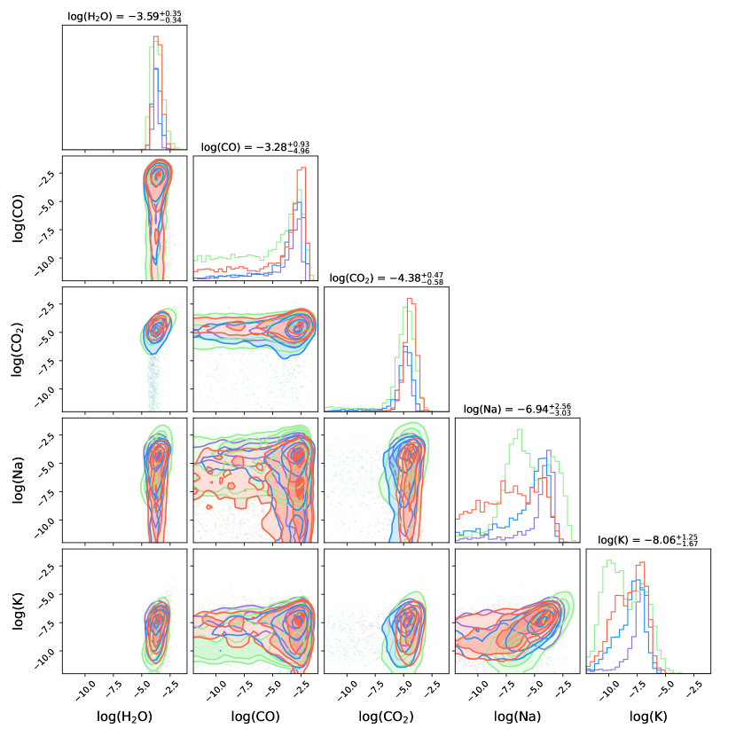
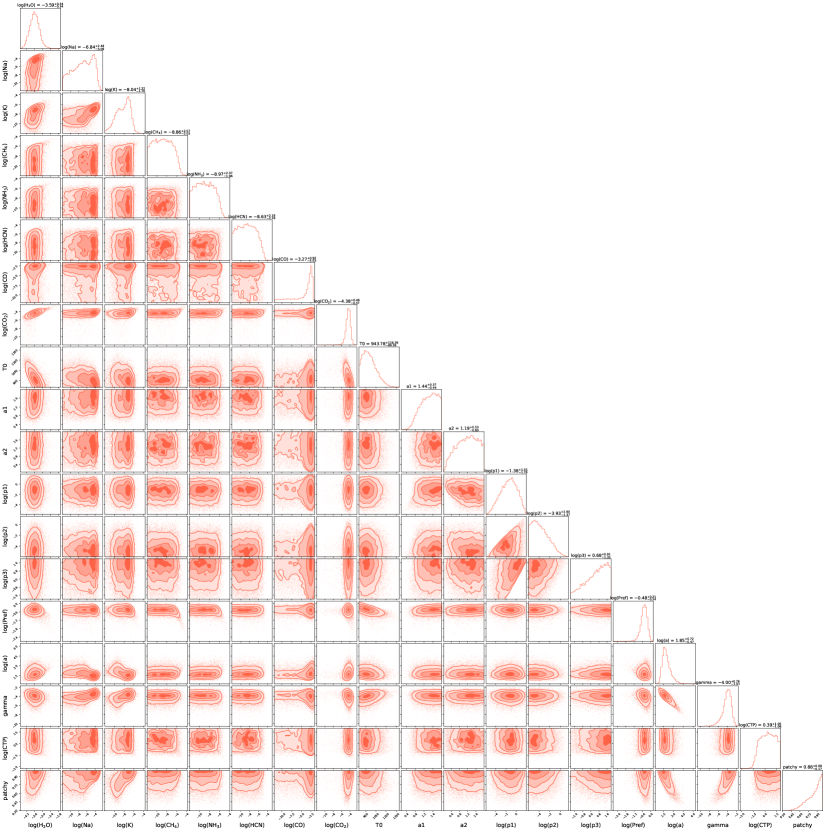
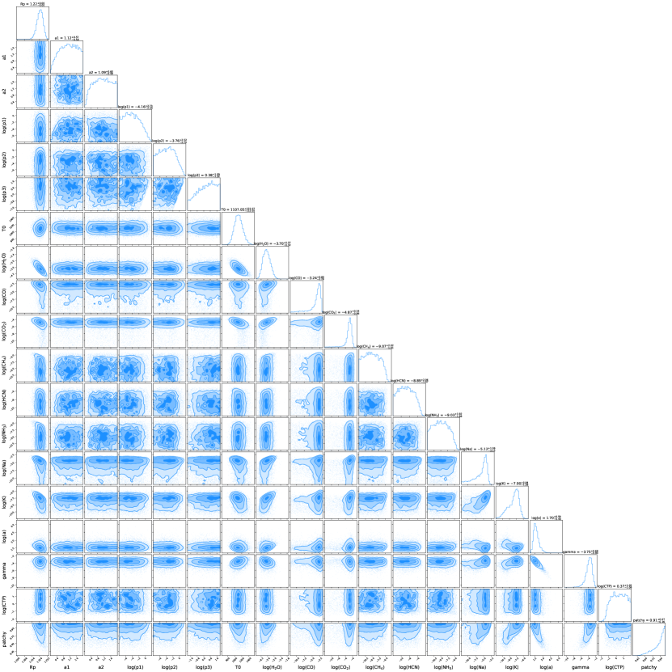
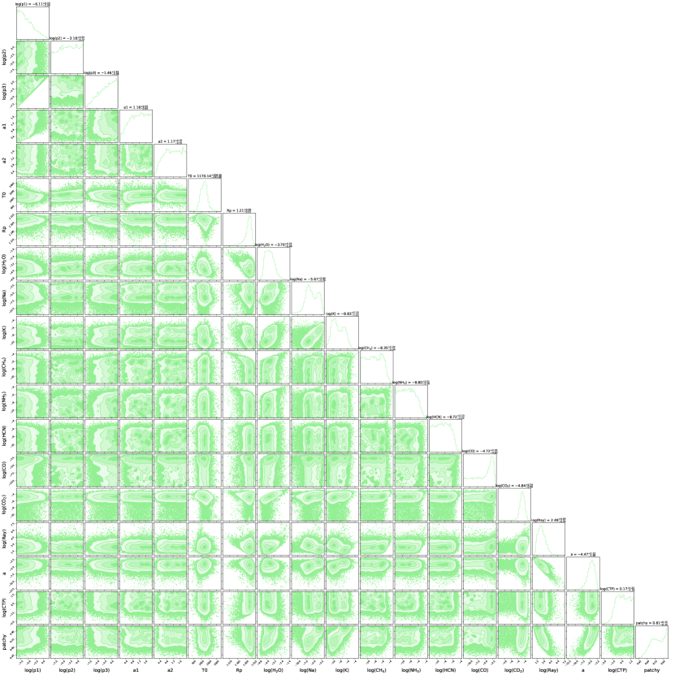
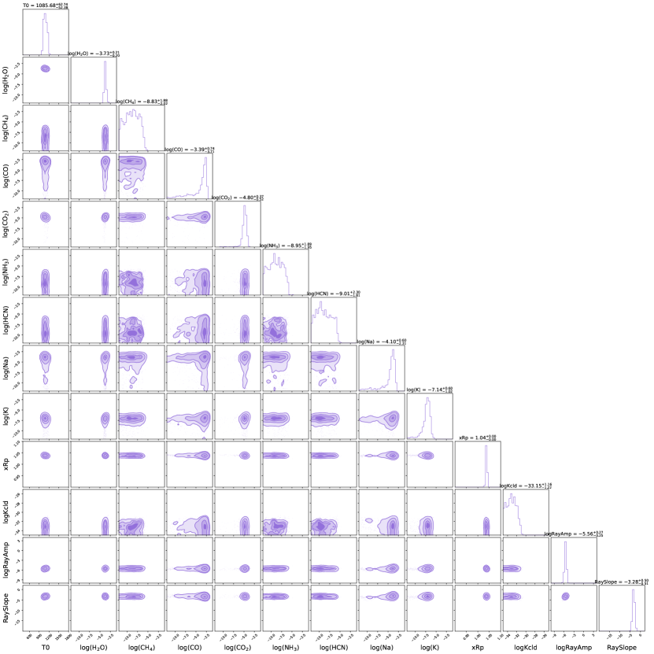
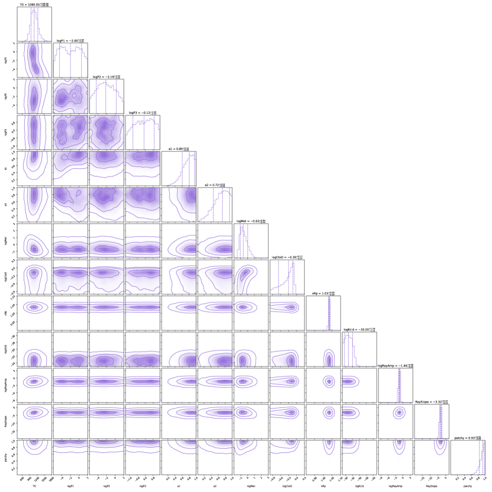